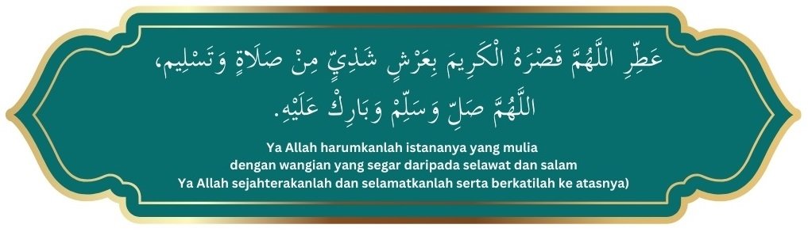

Mari kita bercerita tentang Nabi kita. Iaitu Rasulullah SAW, penyelamat manusia dunia akhirat.
Walaupun sebelum ini kita telah menceritakan banyak kali tentangnya. Mungkin kita ceritakan
di sudut-sudut lain yang belum diceritakan lagi. Kalaupun diceritakan lagi tidak mengapa.
Supaya yang lupa diingat kembali. Bertambah ingat lagi. Nabi Muhammad SAW orang luar biasa
yang tidak ada taranya. Sebelum dan sesudahnya dikalangan manusia. Sekalipun dikalangan
para Rasul dan para Nabi yang telah diberita. Baginda adalah rohnya malaikat dan tubuhnya
manusia.

Orang yang paling cerdik dan paling bersih rohnya. Dikalangan manusia sebelum dan
sesudahnya. Maka Baginda diberi julukan oleh Tuhan 'fatonah'. Bahkan yang paling 'fatonah' di
kalangan rasulNya. Ilmunya bukan didapati dari akalnya. Walaupun Baginda orang yang paling tajam
akalnya. Baginda mendapat ilmu dijatuhkan Tuhan di dalam hatinya. Wahyu namanya, Baginda belajar
lansung dari Tuhannya. Kerana inilah Baginda tidak perlu menulis. Dan membaca seperti manusia
biasa. Kerana itulah ilmunya tidak dilupa sepanjang masa. Kalau dari akal mungkin
dilupakannya. Ilmunya menceritakan dunia dan akhirat.
Tawakalnya luar biasa. Sebab itulah di malamnya makanan tidak disimpan untuk esok harinya.
Dan diberikan kepada manusia yang memerlukannya. Kerana Baginda yakin, kalau esoknya baginda
hidup. Tuhan merezkikannya. Baginda tidak merezkikannya. Baginda tidak membunuh orang. Walaupun
di setengah-setengah waktu Baginda harus membunuhnya. Tapi Baginda tidak membunuhnya. Dia
mengambil jalan yang utama. Iaitu memaafkannya. Kerana itulah orang itu Islam ditangannya.
Beraninya luar biasa tiada tandingannya. Baginda sanggup lalu dihadapan musuhnya seorang diri.
Musuhnya tidak mengapa-apakannya bahkan terpinga-pinga.
selawat
Kasih sayangnya sangat ketara. Terutama kepada fakir miskin, anak-anak yatim dan jandajanda. Orang yang bersalah dimaafkannya. Sekalipun orang itu tidak memintanya. Pernah
hamba sahaya hendak dihukum oleh tuannya. Baginda membuka bajunya untuk disebat. Pengganti
hamba sahaya, tuan hamba sahaya itu malu dibuatnya. Lalu dimerdekakannya. Pernah
Rasulullah SAW membeli hamba sahaya kemudian dimerdekakannya. Pemurahnya tidak ada
taranya. Macam angin kencang lajunya. Tiada siapa yg boleh menandinginya. Dan tidak pernah
menghampakan orang yang meminta. Sekalipun Baginda terpaksa berhutang buat sementara.
Kalau ada orang mengata dan menghinanya. Baginda diam sahaja, tidak menjawabnya. Gembiranya
tidak ketawa, hanya senyum sahaja. Cuma ketaranya dimukanya. Bahkan tidak pernah
menghina orang atau mengata aibnya. Sekalipun musuhnya. Rasulullah makannya sedikit
sekadar mengalas perutnya. Baginda tidak pernah makan seorang, sekalipun lapar. Paling tidak, dia
makan berdua. Tapi kalau tidak suka setengah jenis makanan itu. Baginda tidak pula mencercanya.
Kalau Baginda marah dengan orang, disembunyikan marahnya. Sehingga orang tidak tahu marahnya.
ia tidak pernah melahirkan jijik kepada manusia. Sebab itu Baginda sanggup makan dengan orang
berkudis-kudis badannya.
Sabarnya luar biasa. Tentang ujian yang Tuhan timpakan kepadanya berbagai-bagai bentuknya.
Dia redha. Lantaran itu Tuhan beri gelaran 'Ulul azmi'. Yang tiada tandingannya. Bahkan dia
ketua 'Ulul azmi' diakalangan rasul-rasul. Di tangannya lahirlah murid-murid yang luar biasa.
Diberi gelaran sahabat namanya. Ratusan ribu bilangan, lebih seratus ribu bilangannya. Ini tidak
pernah berlaku di kalangan rasul-rasul sebelumnya. Semua Sahabat-Sahabatnya masuk syurga.
Kerana dosa-dosa mereka diampunkan Tuhannya. Kerana menjadi Sahabat-Sahabatnya.
Sahabat-sahabatnya laksana bintang dilangit. Rasul adalah bulan purnama.
Hatinya tidak tidur sekalipun matanya tidur. Menunjukkan hatinya sentiasa jaga. Sebab itulah
kalau Baginda tidur tidak membatalkan wudhuknya. Baginda menghormati manusia sesuai dengan
darjatnya. Sekalipun orang itu kafir. Kadang-kadang dibentangkan serbannya untuk tempat
duduk tetamunya. Kerana menghormati tetamunya. Baginda tidak mengutuk dan melaknat makhluk
Tuhan. Sekalipun binatang yang melata. Begitu juga tidak pernah melakukan kesalahan.
Sekalipun menyalahi utama. Kalau Baginda melihat perempuan, matanya ditundukkannya. Baginda orang
paling pemalu. Malunya kalah anak dara paling pemalu. Sebab itu seumur hidup Baginda tidak
pernah melihat kemaluannya dan kemaluan isterinya. Kalau Baginda lalu, tidak dibenarkan
perempuan dihadapannya.
Ibadahnya banyak, terutama diwaktu malam. Hingga bengkak-bengkak kakinya. Baginda suka
berkhidmat dengan isteri-isteri dan keluarga. Bukan diarah-arahkan oleh isteri-isterinya. Tapi
dia buat dengan sukarela. Kerana mencari redha Tuhannya. Baginda sebaik-baik suami. Tidak
mampu orang lain membuatnya.
Bahkan Baginda berkhidmat dengan musuhnya. Satu cerita yang menyayat hati kita. Seorang buta
yang benci kepadanya. Rasul berkhidmat tanpa diketahuinya. Hingga sampai waktui wafatnya.
Diganti oleh Saidina Abu Bakar untuk berkhidmat kepadanya. Tapi dirasakan olehnya ada
kelainan dari sebelumnya. Kamu ini siapa?. Saidina Abu Bakar berkata: " Saya Abu Bakar"
pangganti Rasul berkhidmat kepada kamu, yang Rasul itu sudah wafat". Si buta itu terkejut!.
Rupanya yang berkhidmat padanya orang yang paling dibenci. Kerana terkejutnya menjadikan
dia mati. Tapi sempat dia mengucap dua kalimah syahadat. Islamlah dia.
Kalau Baginda bersahabat atau berkawan mengutamakan kawannya. Bahkan berkhidmat kepada
Sahabatnya. Setiap orang yang bergaul, berpuas hati dengannya. Setiap orang merasa dia
dihormatinya. Walaupun berbagai-bagai peringkat kedudukannya. Mari kita teruskan cerita
tentang Nabi kita. Supaya lebih terperinci lagi. Cerita dan beritanya. Baginda manusia luar biasa
kekasih Tuhannya. Agar lebih nampak Baginda manusia istimewa. Baginda tidak akan makan sebelum
lapar. Baginda akan berhenti sebelum kenyang. Tidak macam manusia biasa. Baginda tidak suka makanan
banyak jenis lauknya. Kalau Baginda suka kerana Tuhannya. Kalau Baginda marah pun kerana Tuhannya.
Bukan kerana peribadinya.
Dia wafat, boleh dikatakan tidak meninggalkan harta. Baginda tidak meninggalkan sembahyang
jemaah. Kecuali sekali sahaja dalam hidupnya. Iaitu waktu sakit hingga membawa wafatnya.
Makan minumnya bukan diusahakannya. Tetapi setiap kali hendak makan, ada rezkinya. Tapi
pengikutnya disuruh berusaha. Terutama yang ada keluarga. Baginda tidak menerima upah. Lebihlebih lagi meminta upah. Kerana usaha perjuangannya. Tetapi ulama di hari ini, memakan upah.
Dari usaha dakwahnya. Seperti yang dibuat oleh kebanyakan ulama-ulama yang cinta dunia.
Bahkan ada ulama yang meminta upah dari dakwah dan pengajiannya.
Takut dengan Tuhan ketara dimukanya. Baginda beristerikan janda kaya, khadijah namanya.
Hartanya diserahkan habis kepadanya. Tetapi Nabi korbankan harta itu semuanya. Dan Nabi,
kalau Baginda berkawan, sebaik-baik kawan. Kalau Baginda di rumah, sebaik-baik bapa. Kalau dia
bersama isteri, sebaik-baik suami. Kalau Baginda memimpin, sebaik-baik pemimpin.
Kalau Baginda bercakap lantang suaranya. Tegang urat merihnya. Kalau Baginda bercakap bak mutiara.
Sangat berkesan pada jiwa orang yang mendengarnya. Kalau Baginda berucap atau berpidato. Tidak
ada gelak manusia yang mendengarnya. Kerana manusia yang mendengar insaf dibuatnya.
Tidak seperti ulama-ulama hari ini. Kalau mereka bercakap galak ketawa orang yang
mendengarnya. Kerana yang dicakapkan itu dari lidahnya. Bukan dari hatinya. Nabi kalau
bercakap singkat-singkat sahaja, tidak meleret. Tidak seperti kebanyakan manusia. Dia
bercakap pendek sahaja. Tapi terhimpun berbagai-bagai ilmu di dalamnya.
Dikatakan oleh hadis 'jawa miul kalim'. Kata-katanya singkat tapi padat. Kata-kata singkat, tapi
maksudnya luas. Kata-katanya singkat, tapi puas dan menggetarkan jiwa. Tidak seperti orang
lain bercakap berjela-jela, isinya tiada. Masa terbuang tapi cakapnya tidak menggetarkan jiwa.
Kita sambung lagi cerita nabi kita. Nabi tidak suka berjalan-jalan membuang masa. Juga tidak
akan bercakap yang sia-sia. Sekalipun tidak berdosa.
Kalau Baginda ketawa tidak berbunyi. Insafnya dapat dilihat dari mukanya. Takutnya pada Tuhan di
mukanya ketara. Baginda melahirkan kegembiraan bila kawan-kawannya gembira. Baginda melahirkan
kesedihan diatas kesedihan kawan-kawannya. Rasulullah mudah menangis. Kerana takutkan
Tuhannya. Rasulullah tahu Tuhan kasih kepadanya. Akhlaknya sungguh agung. Tuhan
memujinya. Bahkan mengatakan Baginda yang paling bertaqwa dikalangan manusia. Sebelum dan
sesudahnya.
Seolah-olah Baginda tidak mendengar apa Tuhan kata terhadap dirinya. Tuhan berkata: "Akhlaknya
sungguh agungnya". Tiada siapa boleh menandinginya. Tetapi Baginda tidak merasa bangga, dia
tetap merasa hamba. Baginda tetap dapat mengekalkan rasa takut dengan Tuhannya. Rasa
kehambaan sentiasa di dalam hatinya. Bahkan tidak pernah putus daripada perasaannya. Soal
Tuhan memujinya itu hak Tuhannya. Tapi Baginda tetap merasa hamba kepada Tuhannya. Tawadhuk
dengan Tuhannya, sentiasa ada. Sangat ketara di dalam hidupnya.
Dia berpakaian jubah dan serban. Warna yang Baginda suka putih dan hijau. Warna lain ada juga
dipakainya. Tapi sekali sekala. Makan yang Baginda suka, susu dan tamar. Daging sebagai lauknya.
Itulah penguat badannya. Demikian secara ringkas. Yang global tentang cerita Nabi kita. Yang
tidak disebut berusahalah untuk mempelajarinya.
Mukjizat banyak berlaku ditangannya. Yang lahir dan yang batin. Yang besar ialah Al-Quran dan Al-Hadis. Yang kekal sampai ke akhir zaman. Untuk
pengajaran dan panduan kepada manusia. Demi keselamatan manusia dunia dan akhiratnya.
Tetapi apa yang disebutkan itu sudah memadai. Bagi orang yang tiada masa mengkajinya.
Berdiri Untuk Marhaban
Marhaban
Kalau peribadi seseorang itu dapat menggambarkan bayangan Nabi kita. Orang itu boleh
menjadi ikutan manusia. Kalau dia memimpin, Tuhan memberkatinya. Betapalah dia pemimpin
yang Tuhan janjikan buat manusia. Tetapi apa yg berlaku di akhir zaman ini. Orang yang
menceritakan Nabi. Dia melupakan diri. Dia menceritakan memuji Nabi. Tapi dirinya tidak
terpuji. Kerana itulah cakap banyak tidak memberikan kesan. Seseorang itu banyak cakap tidak
menggambarkan sikap Nabinya. Walaupun dia seorang pemimpin. Orang tidak suka
mengikutnya. Lidahnya tidak masin. Dia berkata tidak mengkotanya. Bahkan orang yang
mengata dan mencercanya di belakangnya. Bahkan anak isterinya tidak menghormatinya.
Sekianlah adanya.
Doa
selawat